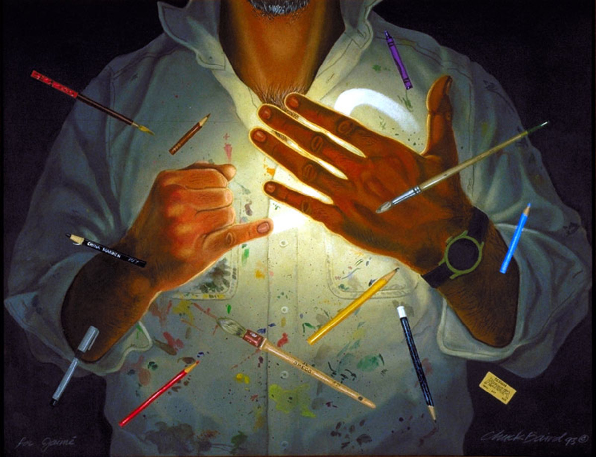
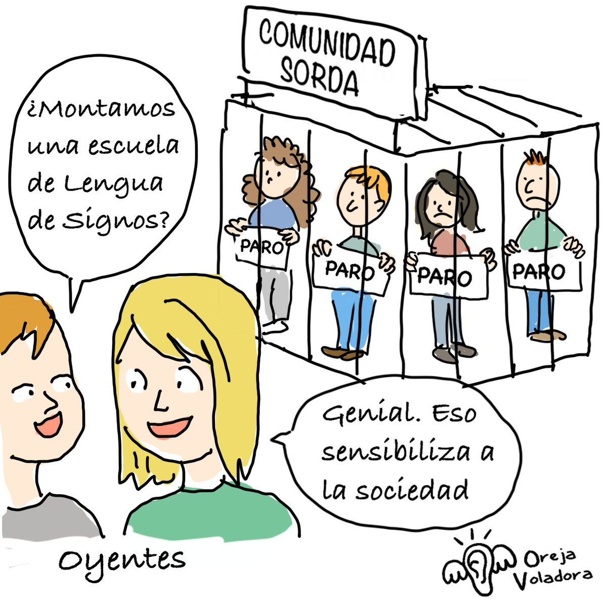

Sordera a través del arte
El arte permite expresar sentimientos, ideas, libertad y entender y transmitir emociones.

Barreras de comunicación
Los sordos presentan barreras de comunicación y es difícil no aprender el lenguaje de señas y expresar arte, lo que representa una problemática.

Imágenes de arte de sordos
Los sordos pueden expresarse a través del arte y transmitir lo que sienten y piensan.